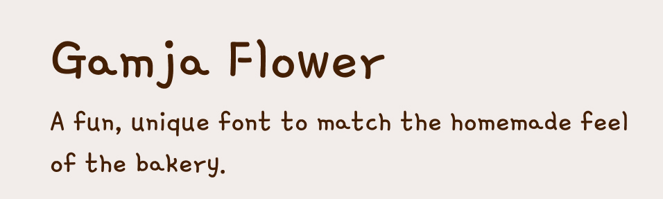
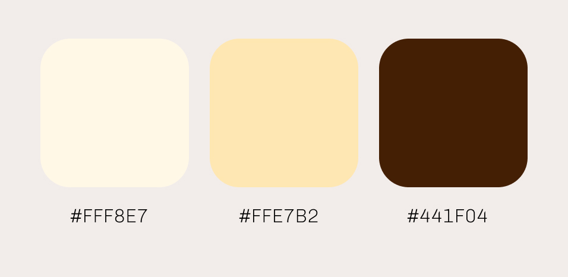
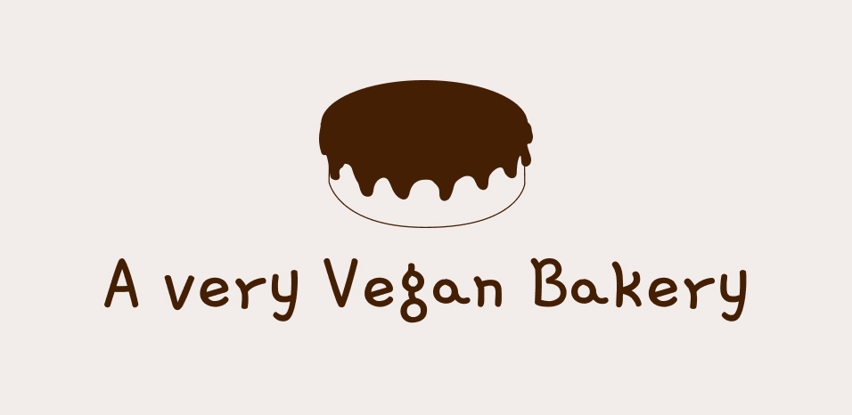
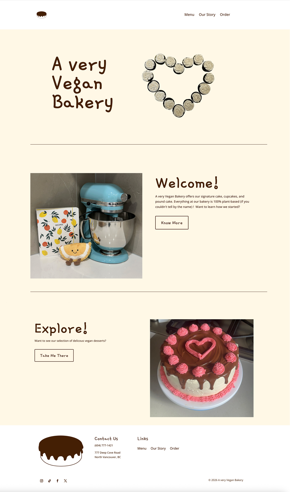
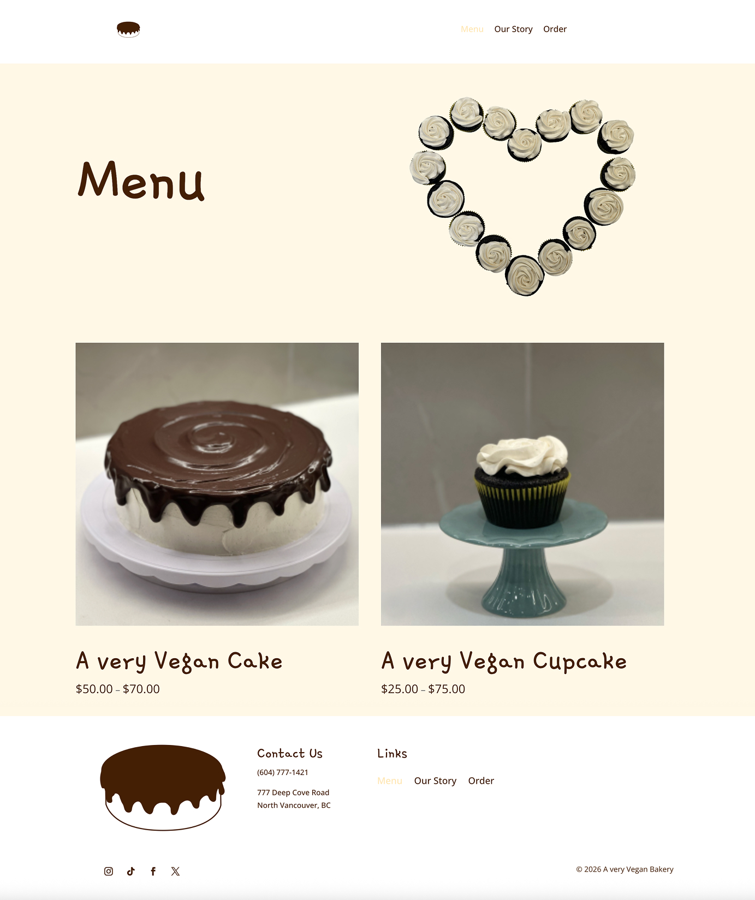
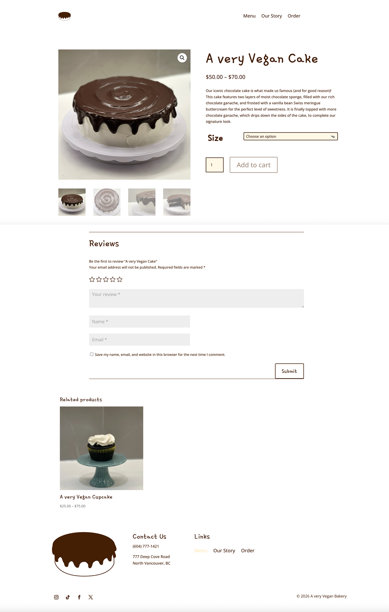
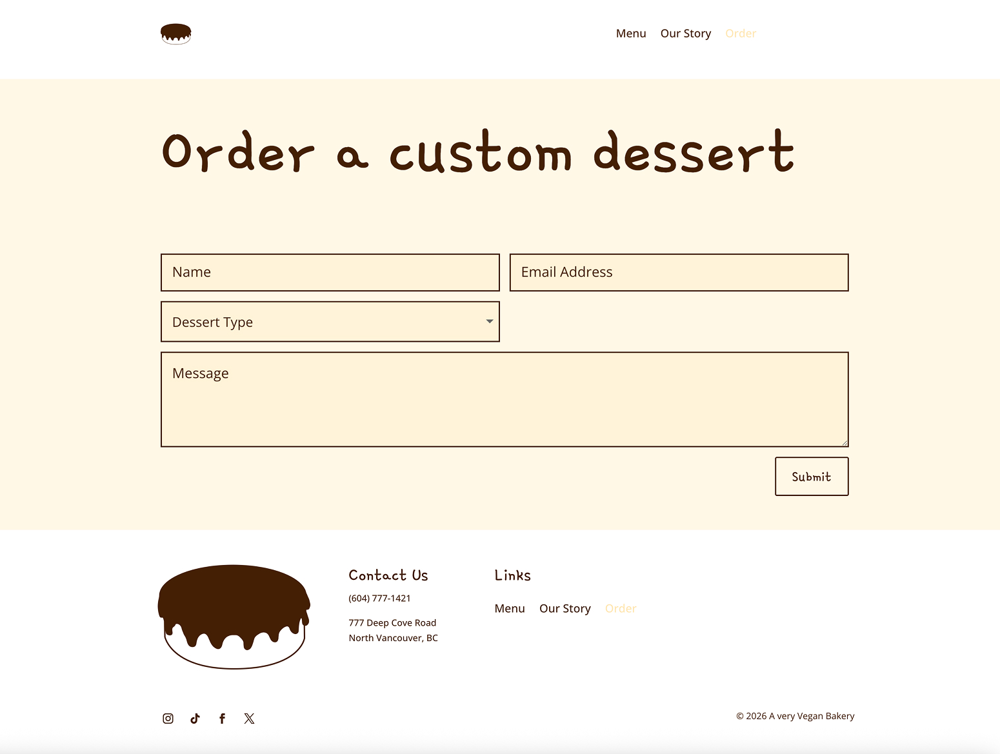
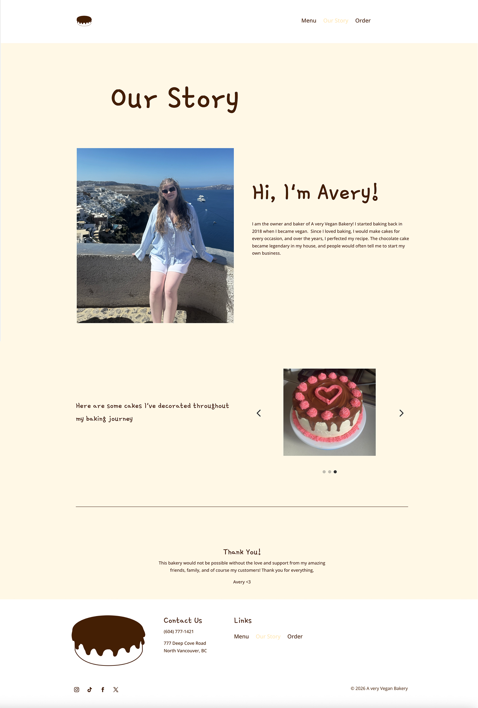

Project Brief
The goal of this project was to design and build a responsive bakery website in WordPress using Divi, simulating a real-world small business scenario. The focus was on creating a clear, easy-to-use experience that allows users to quickly browse the menu and place orders, while also ensuring strong performance and accessibility. Design decisions prioritized fast load times, simple navigation, and a structure that supports both user needs and business goals.
Problem
Small bakeries like A Very Vegan Bakery may not have a clear or easy-to-use website, which can make it difficult for customers to browse products, understand offerings, and place orders. This can lead to missed sales opportunities and reduced engagement, especially when users expect quick and seamless online experiences.
Solution
This project delivers a clear and user-friendly website for A Very Vegan Bakery, designed to help customers easily explore products and complete orders. Built in WordPress using Divi and WooCommerce, the site supports a simple and intuitive ordering flow while maintaining a cohesive brand. The layout uses consistent components and clear structure to reduce friction in the user journey, especially when browsing the menu and selecting items. Performance was also a key consideration, with optimized images and minimal use of heavy animations to ensure fast load times.
Style Guide
Typography

Colours

Logo

Home Page
The home page introduces the bakery and creates a welcoming first impression that encourages users to explore what the site has to offer. A clean layout with generous white space and optimized images keeps the experience clear and easy to navigate, while calls to action guide users to other key pages. Built in WordPress using Divi, the design balances branding and usability to support both user engagement and business goals.

Menu Page
The menu page is designed to help users quickly browse products through large, clear images. A simple layout with generous white space and optimized images keeps the page easy to scan, while a shorter structure helps users make decisions more quickly. Built with WooCommerce in WordPress using Divi, the design encourages users to explore products and move toward purchase, with subtle hover interactions adding a more engaging experience.

Product Page
The product page is designed to help users view and understand individual items in detail so they can make confident purchasing decisions. Large images and clear product information improve clarity, while a review section builds trust and credibility. Related products encourage further browsing, and a dropdown option allows users to customize details such as size before adding items to their cart. Built with WooCommerce in WordPress using Divi, the page supports a smooth and conversion-focused shopping experience.

Order Page
The order page is designed for users who want to place custom dessert orders or include personalized messages. A simple form with clear labels helps users input their information easily, while dynamic fields adjust based on the selected dessert type to reduce confusion and improve accuracy. Built with WordPress and WooCommerce using Divi, the page focuses on creating a smooth ordering experience that encourages completed purchases.

Our Story Page
The Our Story page helps users learn more about the bakery and the person behind the brand, creating a more personal and trustworthy experience. Photography of the owner and a simple story help humanize the brand, while a section showcasing past cakes highlights skill development and builds credibility. The page is designed to create emotional connection and empathy, encouraging users to feel more confident supporting the business. A thank-you section at the bottom adds a warm and welcoming finish.

Reflection
This project helped me understand what it's like to design and build a website in a real-world setting. One challenge was adapting my designs from Figma into WordPress using Divi, where I had to work within layout constraints and think more carefully about structure and consistency. Through this process, I learned how design decisions impact usability and the overall user journey, especially when creating clear navigation and a smooth ordering experience. I also began to consider how performance and simplicity can support both user needs and business goals. If I were to continue this project, I would focus on testing and refining the user flow to make it even more intuitive. Overall, this project strengthened my ability to design with both user needs and real-world constraints in mind.